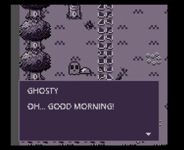

Chapter 04: Midas: The Accursed King
A narrative-driven top-down RPG made for GBJAM 14. Midas, a disgraced king, works to restore his form and memories while chasing wealth and power, with two endings to uncover.
- My role
- Programming and story
- Engine
- Godot, HTML5
- Jam
- GBJAM 14, Sept 2026
- Constraints
- 160×144, four colours, Game Boy inputs
Screen Guide: Dialogue
160×144, four colours

- 1. Scene
The play area keeps the full four-tone palette, so the box below always reads as UI.
- 2. Speaker
The speaker's name sits on its own line above the text.
- 3. Line
Short lines in capitals, sized to stay legible at 160×144.
- 4. Continue marker
A small arrow says there is more to read.
Dialogue UI built to fit the Game Boy screen. Hover or focus an entry to find it on the screen.

Designing inside a tiny box
GBJam's rules are the point: a 160×144 screen, four colours per frame, and only the Game Boy's buttons. Every piece of UI, from dialogue boxes to menus, has to earn its pixels and stay legible with almost no colour to separate information.
Systems over content
With a jam timeline, I leaned on systems that generate variety instead of hand-authoring everything:
- Two power tracks: slaying unique enemies grows LEAD powers, while gold grows GOLD powers, so how you play shapes how Midas grows.
- Gold as a resource: healing costs gold from the SELECT menu, which turns wealth into a running decision.
- Branching endings: after finishing, players can continue and choose differently to see another ending.
Controls
Keyboard maps to the Game Boy layout (Z for A, X for B, arrows to move, Shift for SELECT, Enter for START), and gamepads work out of the box.
Credits
Programming and story: Maurice Birchard (Moninja). Art: Lexiianna. Music and SFX: PhantomAxis Studios and Haphaeu.
What I took from it
Hard constraints make UI decisions faster and sharper. With four colours, hierarchy has to come from shape, spacing and placement, which is good practice for any HUD.